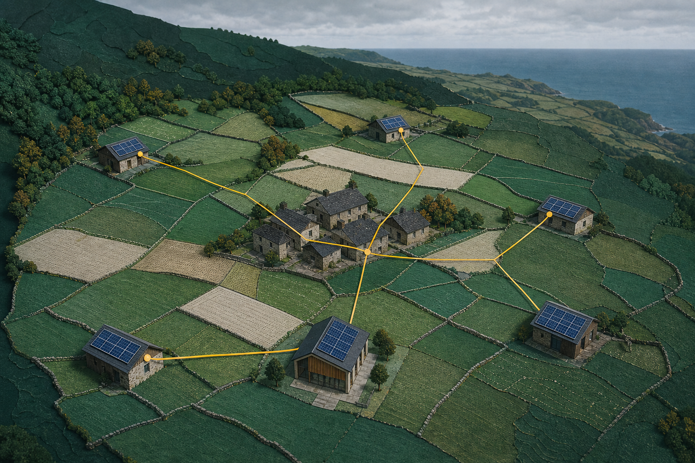

Tasa de autoconsumo
—% proporción de la generación aprovechada directamente CalculadoAnálisis preliminar de comunidades energéticas
Entender si una comunidad energética tiene sentido antes de encargar el proyecto.
CERA cruza territorio, consumo, generación y economía para convertir una oportunidad local en una primera decisión trazable.

Ejemplo de resultado
Previabilidad favorable con datos pendientes
Recurso, encaje horario y economía visibles
Un método, cuatro contextos
Empieza por la decisión que necesitas tomar.
La comunidad como sistema
Generación local compartida para decisiones que ningún activo resuelve solo.
Una comunidad importa porque conecta recursos y necesidades: permite compartir acceso, aprovechar la complementariedad de perfiles y decidir juntos qué inversión, reparto y validaciones tienen sentido.
- Activos Cubiertas, suelo y equipamientos aportan capacidad de generación.
- Participantes Hogares, entidades y actividades acuerdan cómo compartirla.
- Consumo Perfiles complementarios aprovechan la energía en horas distintas.
- Red Cubre el consumo restante y recibe los excedentes del escenario.
Qué entrega CERA
Cuatro lecturas para decidir qué merece validarse.
-
01Potencial solar y energético
Recurso territorial, superficie útil, potencia y producción anual.
-
02Aprovechamiento compartido
Autoconsumo, cobertura, excedentes y coincidencia entre perfiles.
-
03Lectura económica
CAPEX, O&M, VAN, LCOE y retornos bajo hipótesis editables.
-
04Madurez y siguientes pasos
Qué está calculado, qué es estimado y qué exige validación técnica.
Ejemplo · no es un caso de cliente
La decisión y sus límites, en la misma lectura.
Ejemplo
Previabilidad favorable con datos pendientes
El balance temporal y la economía justifican contrastar el escenario.
- Autoconsumo
- Calculado
- Cobertura solar
- Estimado
- Diseño eléctrico
- Validación técnica
| Escenario | Lectura |
|---|---|
| Ajuste | Prioriza autoconsumo |
| Equilibrio | Compara VAN y cobertura |
| Máximo | Usa la superficie disponible |
Dato pendiente: curva horaria real y revisión de implantación.
Diagnóstico preliminar · Asturias rural
Construye un escenario común y trazable.
Cuatro etapas conectan contexto, consumo, generación y economía. Cada hipótesis queda visible antes de calcular.
Orientación inicial
Resultado del escenario
Cobertura solar del consumo
—% energía consumida en el propio escenario EstimadoProducción fotovoltaica anual
—kWh/año según el rendimiento del escenario elegidoExcedentes a red
—kWh/año generación no coincidente con el consumoLecturas clave
Qué sostiene la orientación
- Potencia recomendada
- —kWp
- Ahorro anual estimado
- —EUR/año
- Impacto climático
- Dato pendienteFactor de emisiones no incorporado.
Destino de la generación · porcentajes sobre la producción fotovoltaica.
Autoconsumo
—
Excedente a red
—
Cobertura de la demanda · porcentajes sobre el consumo anual.
Demanda cubierta por solar
—
Demanda cubierta por red
—
La producción supera el consumo anual; parte relevante se vertería a la red.
Economía orientativa
Magnitudes para contrastar
- Retorno simple
- —años
- Retorno descontado
- —años
- Valor actual neto
- —EUR
- Coste nivelado de energía
- —EUR/kWh
- Inversión orientativa
- —EUR
- Ahorro por participante
- —EUR/año
Qué falta validar
Límites que condicionan la decisión
Entregable · Predesarrollo
Pasaporte del escenario
Cruce temporal
Cuándo coinciden generación y consumo
Dato pendiente: el motor v2 incorporará la alternativa textual de los 24 intervalos.
Dato pendiente: el motor v2 incorporará generación, consumo y autoconsumo por mes.
Dimensionamiento
Tres alternativas con reglas explícitas
| Alternativa | Regla | Potencia | Autoconsumo | Cobertura | CAPEX | VAN |
|---|---|---|---|---|---|---|
| Ajuste a consumo | Prioriza autoconsumo | — | — | — | — | — |
| Equilibrio recomendado | Balancea energía y economía | — | — | — | — | — |
| Máximo aprovechamiento | Limita la superficie útil | — | — | — | — | — |
Sensibilidad económica
Qué cambia en cada lectura
| Escenario | CAPEX | Compra | Excedentes | VAN | Retorno descontado |
|---|---|---|---|---|---|
| Conservador | +15 % | −10 % | −15 % | — | — |
| Central | Sin cambio | Sin cambio | Sin cambio | — | — |
| Favorable | −10 % | +10 % | +10 % | — | — |
Madurez técnica
Lo evaluado y lo que todavía exige proyecto
- Recurso y energíaCalculado
- Encaje e implantaciónEstimado
- Curva real y condiciones del activoDato pendiente
- Diseño eléctrico, proyecto y certificaciónValidación técnica
Ver hipótesis, reglas y límites del cálculo
Fórmulas
- Autoconsumo por intervalo = mínimo entre generación y consumo.
- VAN = −CAPEX + suma de cada flujo neto descontado.
- LCOE = costes descontados divididos por energía descontada.
Fuentes
- JRC PVGIS 5.3 para recurso solar territorial.
- Hipótesis económicas CERA editables y pendientes de contraste.
Resultado preliminar. No sustituye una ingeniería, un estudio de acceso y conexión, un presupuesto, una tramitación ni una certificación.
Recurso territorial · PVGIS
Lee el territorio antes de dimensionar.
Compara el recurso fotovoltaico de los concejos asturianos. Esta lectura aporta contexto y solo cambia el diagnóstico después de una confirmación explícita.
Cargando mapa territorial…
—
- Menor
- Medio
- Alto
- Mayor
Método, trazabilidad y límites
Saber qué se calcula y qué falta comprobar.
CERA convierte datos e hipótesis en una lectura preliminar. La decisión profesional requiere contraste técnico, económico, jurídico y territorial.
01 · Qué calcula CERA
Un escenario energético común, no un proyecto definitivo.
- Potencia limitada por superficie útil y estrategia de dimensionamiento.
- Producción, autoconsumo, cobertura, excedentes y compra de red.
- CAPEX, O&M, VAN, LCOE, retorno simple y retorno descontado.
- Sensibilidad y madurez con estados de confianza visibles.
02 · Datos y cruce temporal
Territorio, generación y consumo se comparan por mes y hora.
El recurso procede del conjunto local JRC PVGIS 5.3. El consumo anual
se distribuye mediante un Perfil sintético CERA en 288 intervalos
mes-hora o un CSV local con formato mes,hora,kWh,
procesado en este navegador.
Densidades iniciales: Cubierta · 5,0 m²/kWp; Aparcamiento · 6,5 m²/kWp; Suelo · 8,0 m²/kWp. Son hipótesis geométricas, no diseño constructivo.
En cada intervalo, autoconsumo es el mínimo entre generación y consumo; el resto se separa entre excedente y compra de red.
03 · Economía y escenarios
Cada comparación muestra qué supuesto cambia.
CERA evalúa ajuste, equilibrio y máximo aprovechamiento. Después contrasta escenarios conservador, central y favorable variando CAPEX y precios de compra y compensación de forma explícita.
- VAN
- Flujos netos descontados menos la inversión inicial.
- LCOE
- Costes descontados entre energía descontada.
- O&M inicial
- 2 % del CAPEX por año, editable.
04 · Lista de comprobación regulatoria
Condiciones que deben comprobarse para cada proyecto.
Proximidad del autoconsumo colectivo
Regla general de proximidad inferior a 500 m. Posible extensión inferior a 5.000 m para instalaciones fotovoltaicas o eólicas de hasta 5 MW conectadas a través de red de transporte o distribución, sujeta a las condiciones aplicables.
Consultar Real Decreto-ley 7/2026 en el BOERepresentación y reparto
El gestor de autoconsumo puede representar a consumidores asociados. Deben comprobarse modalidad, conexión, puntos de medida, consumidores asociados y coeficientes de reparto para el caso concreto.
Revisar condiciones y gestor de autoconsumo en el BOEAgrivoltaica y PAC
La elegibilidad completa se limita a instalaciones agrivoltaicas en tierra de cultivo o cultivo permanente, manteniendo la actividad agraria como principal. No se generaliza a pastos permanentes ni a cualquier suelo agrario.
Consultar Real Decreto 916/2025 en el BOE05 · Matriz de madurez
Cuatro estados evitan confundir estimación con comprobación.
- Recurso y energíaCalculado
- ImplantaciónEstimado
- Datos reales del activo y consumoDato pendiente
- Diseño eléctrico y certificaciónValidación técnica
05 · Proyecto y certificación
El diagnóstico abre una ruta; no la sustituye.
- 01
Acordar el caso
Participantes, objetivo, activos y perímetro inicial.
- 02
Validar implantación
Visita, estructura, sombras, acceso y conexión.
- 03
Desarrollar proyecto
Diseño eléctrico, presupuesto, reparto y tramitación.
- 04
Certificar y operar
Firma competente, puesta en servicio, medida y mantenimiento.
06 · Privacidad y fuentes
Datos locales y procedencia visible.
- Recurso solar
- JRC PVGIS 5.3, serie local versionada para ocho zonas asturianas.
- Consumo
- Perfil de referencia declarado o CSV local; no se envía ni persiste.
- Economía
- Hipótesis CERA editables; deben contrastarse con tarifa y presupuesto vigentes.
- Alcance
- Análisis preliminar para preparar una revisión profesional.